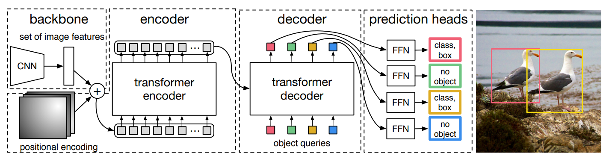

DETR
概述
- 基于Transformer的端到端目标检测网络
- 由于Transformer强大的上下文理解能力，无需人工设计锚框与NMS，能够检测出先前方法nms会误判的两个目标重叠的情形。对于大型物体与Faster RCNN相比具有优势，但是小物体检测不如Faster RCNN
- 一次预测所有对象
- DETR 由四个部分组成：
- 用于提取紧凑特征表示的CNN backbone
- Transformer 编码器，以加上位置编码的打散的CNN输出特征作为输入。
- Transformer 解码器，以编码器的输出与一个Object Query（可学习的位置编码）作为输入。
- 进行最终检测的简单FFN。

方法
CNN Backbone
使用传统CNN（丢弃了分类层的ResNet）将 的输入图像映射到 的特征图。
Transformer Encoder
使用 卷积层将特征图的通道数降低到到 。再将其展平为 的 维张量，加上不同频率的正弦与余弦函数作为每个位置上的固定的位置编码（不仅仅是Encoder的输入，每个注意力层的输入都会被加入位置编码），以输入Transformer Encoder模块。
Transformer Decoder
Decoder将Encoder的输出解码为 N 个检测对象（通过改变输入的查询序列的长度来实现），N被设置为远大于图片中可能出现的对象数量的固定值。由于Decoder也是排列不变的，因此 N 个输入查询嵌入是可学习的不同的位置编码，我们称之为Object Query。
与标准Transformer Decoder不同的是，我们使用每个解码器层并行解码N个对象，而不是以自回归的方式。
前馈网络 FFN
由一个 层的感知机预测边缘框的归一化中心坐标、高度和宽度。
以及一个Softmax线性层预测物体类别（额外一个背景类别）。
损失
在计算loss值之前，需要先使用匈牙利算法（根据类别、边缘框距离、交并比）将模型输出的对象与ground truth的对象进行匹配，得到与ground truth对象数量相同、cost最小的 个输出，对于这 个输出与其对应的ground truth（ 对应 ）计算损失：
Arxiv Github
All articles in this blog are licensed under CC BY-NC-SA 4.0 unless stating additionally.